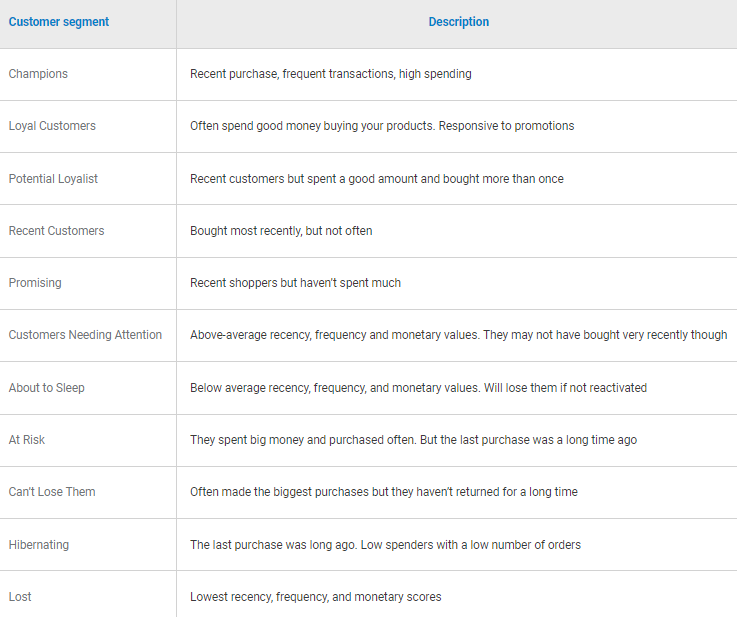
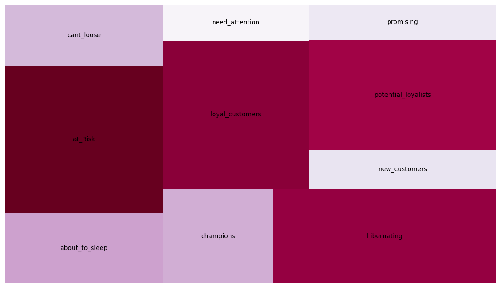
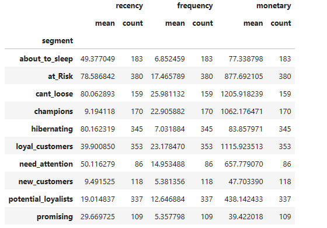
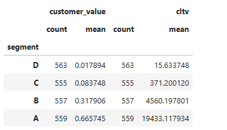

The application of an RFM (Recency, Frequency, Monetary) behavioural analysis creates the possibility of personalizing offers, while taking into account the consumer's profile. It can also be used to optimize customer retention.
CTLV (Customer Lifetime Value) is a measure used to analyze the value that a customer has for a company. It seeks to predict the value consumers will have for the company based on their past value. This measure becomes crucial since keeping customers is more economically viable than trying to acquire new customers.
The combination of these two types of analysis provides a more detailed framework for designing a strategy that seeks to optimize profits from a marketing campaign.
To calculate RFM, three variables are needed: one that represents the purchase frequency; a second variable that quantifies the amount spent on purchases; and the last one indicates when the last purchase was made.
From these variables, RFM's scores are created to categorize customers.
The following result was obtained:
Dots at a level greater than 20 in "Frequency", above 50 in "Recency", and in shades of orange or yellow represent the most valuable customers for the company.
Now the categorization of RFM will take place following this methodology [1]:
Final result:
 After the RFM segregation, strategies can be applied while taking into account the behavioural profile of consumers.
To calculate CLTV it is necessary to consider the average purchase, the frequency of purchase and the profit margin. This measurement seeks to predict the value consumers will have for a company, according to their past behaviour. When applying CLTV, the segregation of consumers will be made from the categories: from "A" (Consumers with the highest value for the company) to "D" (Consumers with the lowest value for the company).
The following segregation of consumers was obtained:
[1] - "Customer segmentation using RFM analysis", Link